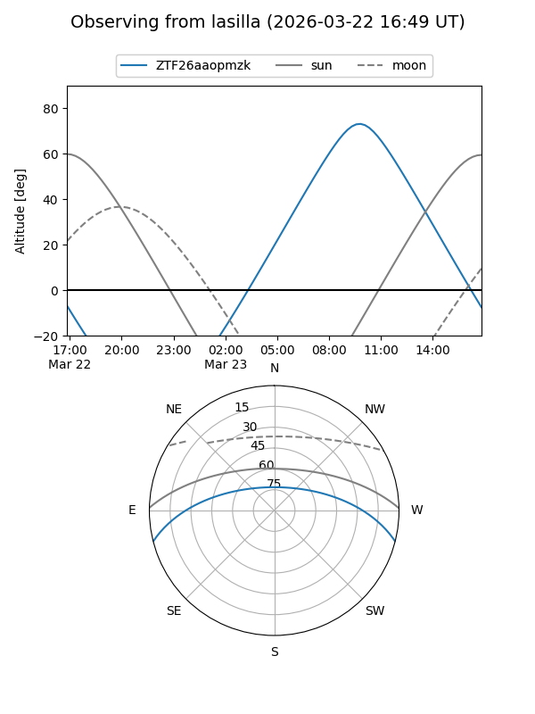
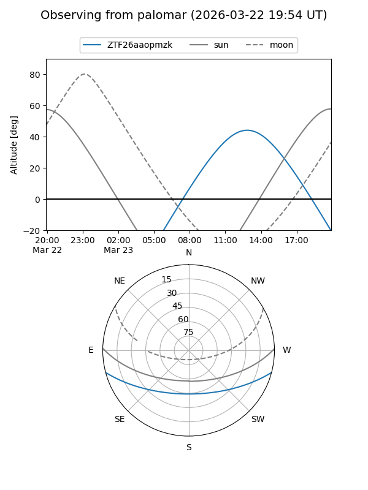

ZTF26aaopmzk
Target ZTF26aaopmzk at 2026-03-22 14:06
Aliases and brokers:
FINK: link
Lasair: link
ALeRCE: link
alt names
ZTF26aaopmzk (ztf,fink_ztf)
Coordinates:
equatorial (ra, dec) = 256.3230,-12.41583
equatorial (HMS+DMS) = 17:05:17.52,-12:24:56.99
galactic (l, b) = (8.8609,+16.87470)
Flags:
Photometry:
last ztfg=17.24
1 ztfg detections
Lightcurve
Visibility


Additional plots